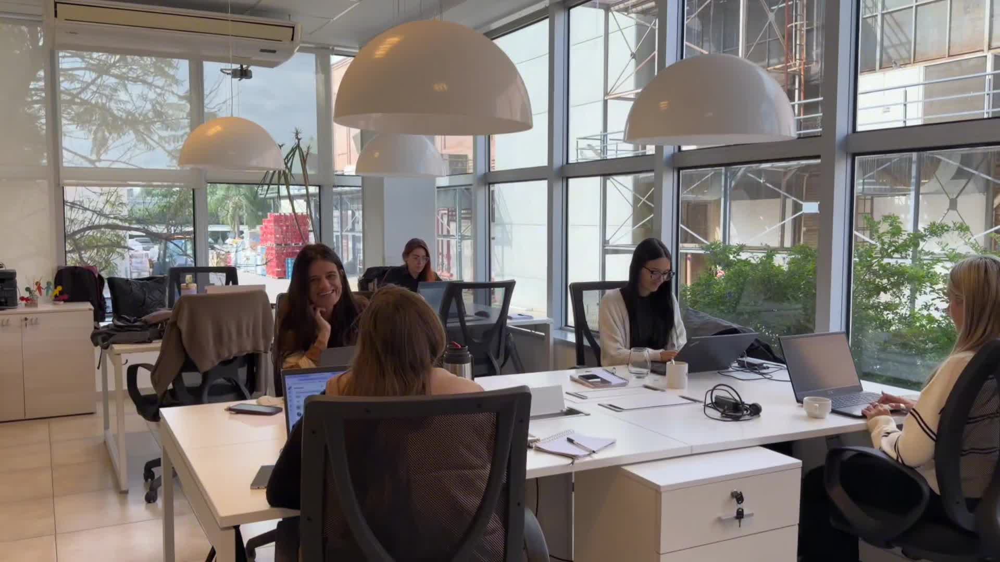
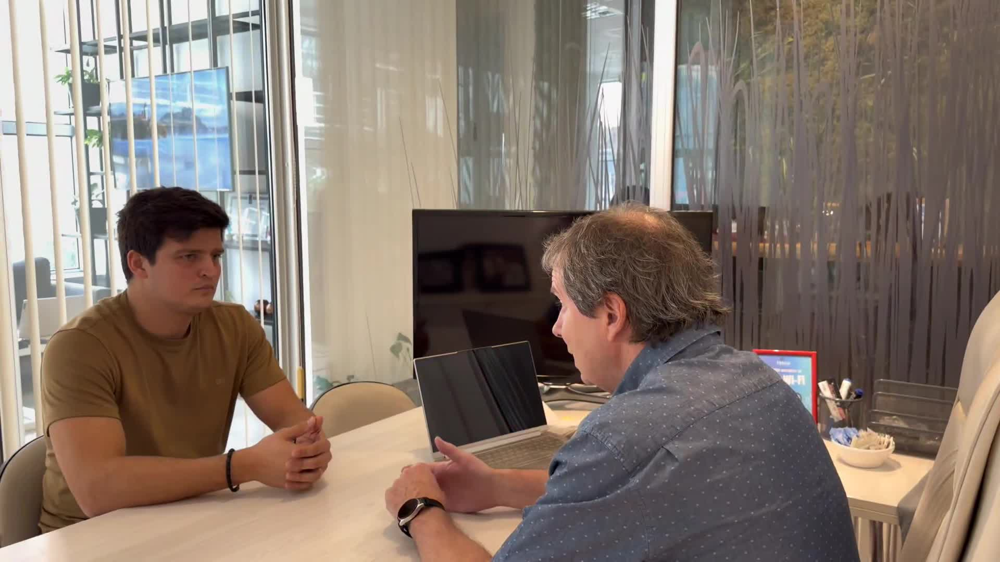
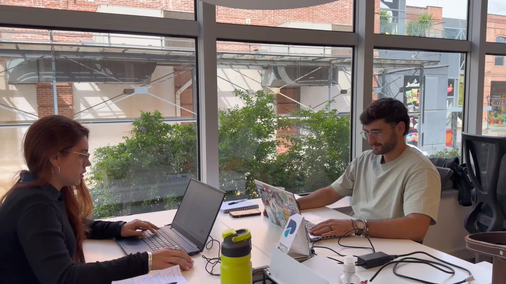
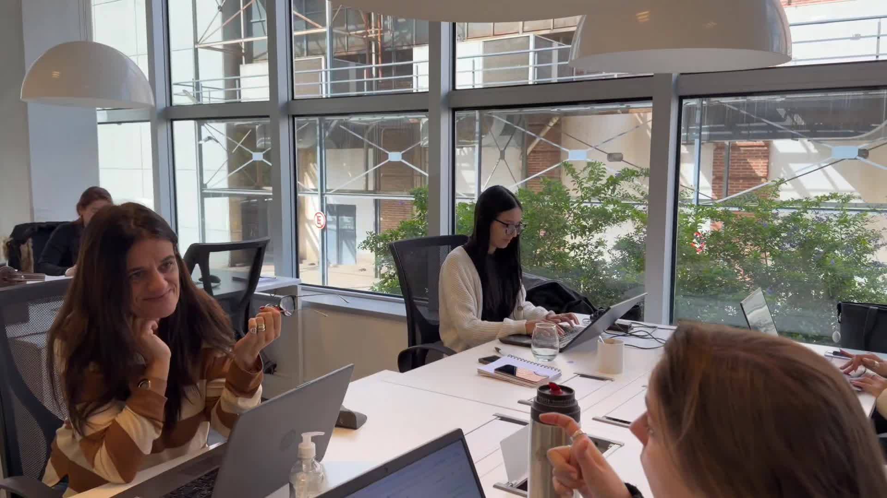
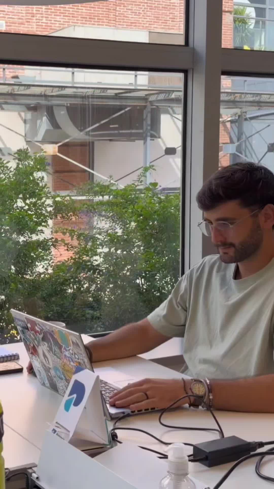

Años en el mercado
Innovación en la Gestión de Talentos
Transformamos la gestión del talento con innovación y estrategia.
Ayudamos a optimizar, mejorar y transformar organizaciones mediante soluciones estratégicas que integran tecnología avanzada y el potencial humano.
Acompañamos a +150 empresas a transformar su gestión del talento.
Empresas acompañadas
Talentos gestionados
Clientes satisfechos
Quiénes somos
Liderando el futuro del trabajo a través del talento.
Somos especialistas que creemos que las personas son mucho más que recursos: son TALENTOS. Y es ahí donde proponemos colaborar, con un equipo de profesionales apasionados por el desarrollo humano y organizacional.
Aportar valor a las organizaciones a partir de una intervención experta tendiente a optimizar, mejorar y transformar procesos, sistemas y recursos.
Ser líderes y referentes en la innovación de la gestión del Talento, combinando la tecnología con el potencial humano.

+20años de experiencia
Innovación
Combinamos herramientas tecnológicas con estrategia organizacional para ofrecer soluciones únicas al mercado.
Tecnología
Herramientas digitales que potencian los resultados de la gestión del talento en tiempo real.
Talento
Identificamos, desarrollamos y retenemos el talento que impulsa el crecimiento de cada organización.
Nuestros servicios
Soluciones a medida para cada etapa de tu evolución.
Abordamos los desafíos más complejos en la gestión empresarial con una metodología probada y adaptable.

Servicio 01
Selección de Talento
Encontramos a los profesionales que tu organización necesita, con metodología rigurosa y foco en el fit cultural.
- Búsqueda y selección ejecutiva
- Assessment de competencias
- Entrevistas por valores
- Informes de candidatos

Servicio 02
Consultoría Organizacional
Diagnosticamos, diseñamos e implementamos soluciones que mejoran performance, cultura y procesos.
- Diagnóstico organizacional
- Diseño de estructuras y procesos
- Coaching ejecutivo
- Intervenciones de cultura

Servicio 03
Formación Continua
Programas de formación y capacitación diseñados a medida para desarrollar competencias clave.
- Programas in-company
- Capacitaciones por área
- Liderazgo y habilidades blandas
- Formatos presenciales y online
Nuestro camino hacia la excelencia
Un proceso probado, iterativo y claro.
Metodología para garantizar el éxito de cada intervención y sostener resultados en el tiempo.
Diagnóstico
Analizamos la situación actual e identificamos desafíos, oportunidades y necesidades reales.
Intervención
Diseñamos e implementamos soluciones a medida con metodología orientada a resultados.
Personalización
Adaptamos cada herramienta al contexto único de la organización y su cultura.
Mejora continua
Medimos, ajustamos y acompañamos para sostener resultados a largo plazo.

Por qué Poncio
Por qué las empresas líderes eligen Poncio.
Nuestro enfoque combina la profundidad del conocimiento humano con herramientas de data analytics para generar decisiones más inteligentes, estrategias más ágiles y resultados de impacto real.
- Atención personalizada por todos los directivos
- Uso de data analytics para decisiones objetivas
- Enfoque puesto en resultados y métricas de negocio
Valores que guían nuestra acción
La integridad sostiene cada decisión.
Principios que guían la forma en que colaboramos con empresas, candidatos y equipos.
Confianza
Construimos relaciones sólidas y duraderas basadas en honestidad, transparencia y justicia.
Innovación
Colaboramos en la creación conjunta de nuevas formas de trabajar y crecer.
Honestidad
Actuamos con transparencia y sinceridad en todas nuestras interacciones.
Pasión
Disfrutamos lo que hacemos y sostenemos esa energía en cada proyecto.
Excelencia
Buscamos estar a la altura de cada exigencia con un servicio de calidad superior.
Expertos apasionados por el cambio
Un equipo senior, cercano y multidisciplinario.
Experiencia corporativa, mirada humana y foco comercial para acompañar cada desafío.

Martín PoncioDirector General / Consultor / CoachDirección
in

Guillermina PoncioCustomer Experience ManagerConsultoría / CX
in

Silvina DagumCoordinadora de SelecciónSelección
in
Pedro MarcónRepresentante ComercialComercial
in
Matías VélezConsultor / Resp. Formación ContinuaFormación
in

Lucrecia IrisoConsultoraConsultoría
in

Candelaria CentenoKey Account / SelecciónSelección
in
Carolina CáceresKey Account / Auxiliar FormaciónSelección / Formación
in
Hablemos sobre cómo transformar tu organización
El primer paso es una conversación clara.
Nuestro equipo está listo para escucharte, entender tu desafío y proponerte el camino más efectivo.